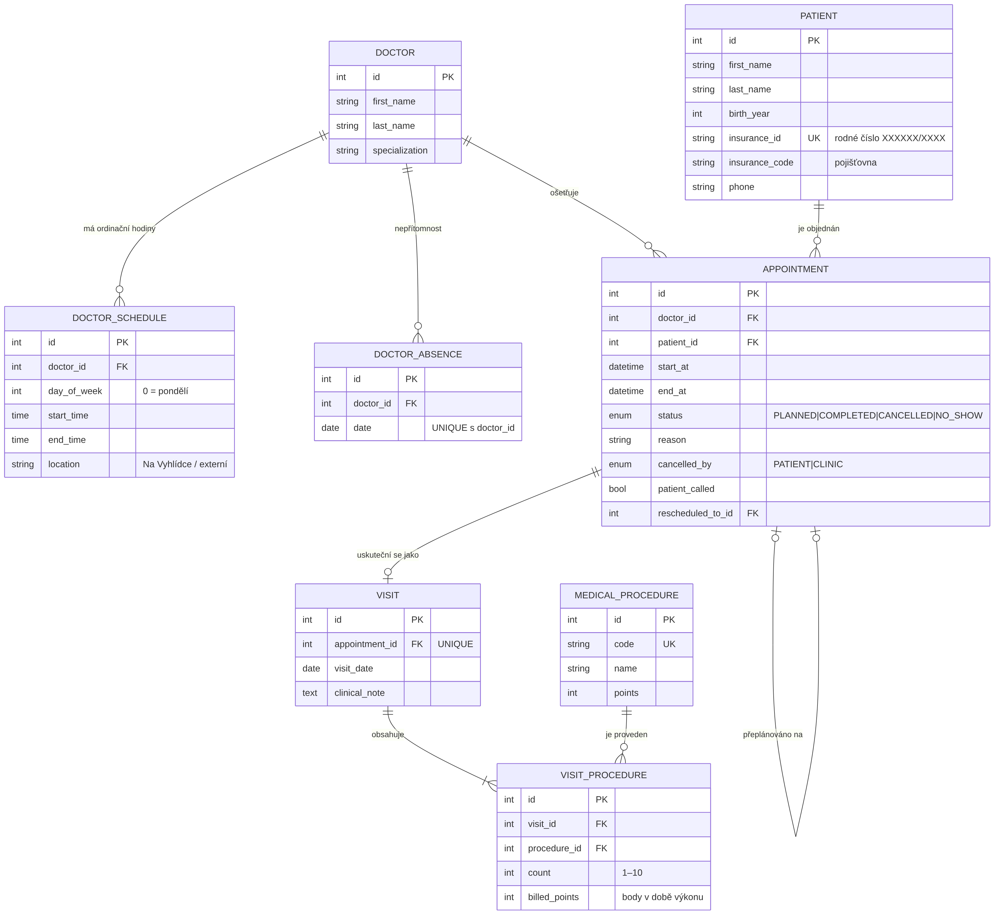

| Předmět | Pokročilé programování (PPRO) |
| Zvolené zadání | Zadání A – Rezervace v ordinaci |
| Autor | Bc. Adam Novák |
| Studijní obor | Aplikovaná informatika – navazující magisterské studium, kombinovaná (dálková) forma |
| Akademický rok | 2026/2027, zimní semestr |
| Repozitář | github.com/NovakGroup/ppro-clinic-reservation |
Klientem je soukromá praxe Ordinace Na Vyhlídce (MUDr. Jana Hrubá): tři lékaři na částečné úvazky, recepční paní Věra a zhruba devět set pacientů. Termíny se dnes zapisují tužkou do papírového diáře, volno se hledá listováním a výkony pro pojišťovnu se na konci měsíce ručně přepisují do tabulky – podle klientky to zabere celý podvečer. Dvakrát za poslední rok seděli v čekárně dva pacienti objednaní na stejný čas.
Primárním uživatelem je recepce. Rozhraní je proto jednoduché, bez přihlašování na lokálním počítači, s velkými tlačítky a srozumitelnými hláškami v češtině („Musí to zvládnout paní Věra“). Funguje i na tabletu a mobilu (responzivní rozložení).
Model obsahuje 8 entit. Vazba M:N mezi návštěvou a výkonem je realizována vazební entitou VISIT_PROCEDURE, která nese vlastní atributy počet provedení a body v době výkonu. V diagramu ji tvoří dvojice vztahů VISIT ||--|{ VISIT_PROCEDURE }o--|| MEDICAL_PROCEDURE.

| Entita | Význam a klíčové atributy |
|---|---|
DOCTOR | Lékař ordinace: jméno, titul, specializace, kontakt. |
DOCTOR_SCHEDULE | Jedno časové okno ordinačních hodin: den v týdnu (0 = pondělí), od–do a location. Okno s jiným místem než „Na Vyhlídce“ (úterní odpoledne MUDr. Svobody) se v diáři zobrazuje, ale nelze do něj objednávat. Check constrainty hlídají platný den a start < end. |
DOCTOR_ABSENCE | Nepřítomnost lékaře v konkrétní den (nemoc). Unikátní dvojice (doctor_id, date). |
PATIENT | Pacient: jméno, příjmení, rok narození, telefon, pojišťovna a insurance_id – rodné číslo v jednotném tvaru XXXXXX/XXXX, které je unikátní a slouží jako přirozený identifikátor. |
APPOINTMENT | Rezervace: lékař, pacient, start_at, end_at, důvod, stav PLANNED / COMPLETED / CANCELLED / NO_SHOW. U zrušení se ukládá kdo rušil (cancelled_by: pacient / ordinace), kdy a proč; patient_called pro obvolávání při výpadku; rescheduled_to_id odkazuje na náhradní termín. |
VISIT | Záznam o uskutečněné návštěvě, 1:1 k rezervaci (unikátní appointment_id), datum a lékařská poznámka. |
MEDICAL_PROCEDURE | Číselník výkonů: unikátní kód, název, bodové ohodnocení. |
VISIT_PROCEDURE | Vazební entita M:N: návštěva, výkon, count (1–10) a billed_points – body platné v okamžiku zápisu, takže pozdější změna ceníku nemění historické výkazy. |
VISIT_PROCEDURE (na jedné návštěvě více výkonů, tentýž výkon u mnoha návštěv).Klíčová pravidla klienta jsou vynucena přímo databází, aby platila „ani omylem, ani ručně“:
ALTER TABLE appointment ADD CONSTRAINT ex_appointment_no_overlap
EXCLUDE USING gist (doctor_id WITH =, tsrange(start_at, end_at) WITH &&)
WHERE (status IN ('PLANNED', 'COMPLETED'));
tsrange je polootevřený interval [začátek, konec), navazující termíny jsou tedy povolené. Zrušené rezervace se nepočítají – slot se uvolní.trg_patient_no_delete, trg_appointment_no_delete, trg_visit_no_delete odmítnou jakýkoli DELETE – „historie pacienta se nemaže“.Aplikace je rozdělena do tří vrstev se závislostmi vedoucími jen shora dolů. Každá vrstva je samostatný Python balíček:
Prezentační vrstva app/api/ FastAPI endpointy, DTO (Pydantic), mapování na JSON
│ + frontend/index.html (UI recepce volá REST API)
▼
Aplikační vrstva app/services/ případy užití: rezervace, návštěvy, výkazy, výpadek
app/domain/ čistá pravidla (ordinační hodiny, překryv, RČ) a výjimky
▼
Datová vrstva app/repositories/ jediné místo s DB dotazy (SQLAlchemy) + unit of work
app/db/ ORM modely, připojení; migrations/ – Alembic
Endpointy v app/api/routers/clinic.py převezmou vstup, nechají Pydantic ověřit jeho formát (typy, délky, rozsahy), zavolají službu a výsledek převedou na DTO. Neobsahují žádné rozhodování ani SQL. Doménové výjimky (BookingRuleError, ConflictError…) převádí jeden handler v app/main.py na HTTP 422 / 409 / 404 s českou hláškou, kterou frontend zobrazí recepci. Webové rozhraní je jedna HTML stránka, která data jen načítá a odesílá – žádné obchodní pravidlo v ní není rozhodující.
Služby (BookingService, PatientService, VisitService, ReportService, AbsenceService, CatalogService) obsahují veškerou logiku: kontrolu ordinačních hodin, detekci překryvu, přechody stavů rezervace, sčítání a historizaci bodů, odvození roku narození z RČ. Nepoužívají FastAPI ani SQLAlchemy; s daty pracují přes unit of work, který jim předá sadu repozitářů. Aktuální datum dostávají jako závislost (Clock), takže testy nejsou závislé na skutečném dni. Čistá pravidla bez stavu jsou vyčleněná v app/domain/rules.py.
Souběh dvou recepcí řeší služba zámkem řádku lékaře (SELECT … FOR UPDATE) před kontrolou překryvu; databázový exclusion constraint je druhá pojistka.
Repozitáře v app/repositories/sql.py jsou jediné místo, kde vznikají dotazy. Agregace pro výkaz počítá databáze (GROUP BY přes vazbu M:N). Chyby integrity (porušený exclusion constraint, duplicitní RČ) repozitář převede na doménovou ConflictError. Schéma vzniká výhradně migracemi Alembic, které se spouští při startu kontejneru.
app/container.py je jediné místo, které zná všechny vrstvy a skládá je: vytvoří session, unit of work a službu. Prezentační vrstva dostává hotovou službu přes FastAPI Depends.tests/unit/test_architecture.py projde importy všech modulů a selže, pokud např. app/api importuje app.repositories, app.db nebo sqlalchemy, pokud služby importují FastAPI či SQLAlchemy, nebo pokud prezentační vrstva obsahuje SQL klíčová slova.| Metoda a cesta | Účel |
|---|---|
GET /api/doctors, GET /api/procedures | lékaři s ordinačními hodinami, číselník výkonů |
GET/POST /api/patients | vyhledání (?q=) se statistikou spolehlivosti, založení karty |
GET/POST /api/appointments | seznam rezervací, nová rezervace / přeplánování |
POST /api/appointments/{id}/cancel | no-show | complete | called | změny stavu rezervace |
GET /api/availability?doctor_id&week_of | týdenní přehled volných slotů |
GET/PUT /api/appointments/{id}/visit | záznam o návštěvě a výkony |
GET /api/reports/monthly(.csv)?month&doctor_id | měsíční výkaz, export CSV |
GET/POST/DELETE /api/absences, GET /api/absences/affected | nepřítomnost lékaře a dotčené termíny |
Úplná interaktivní dokumentace je po spuštění na http://localhost:8000/docs.
| Technologie | Proč byla zvolena |
|---|---|
| Python 3.12 | Čitelný jazyk s malým množstvím šablonovitého kódu, který se dobře vysvětluje u obhajoby. |
| FastAPI | Deklarativní endpointy, dependency injection pro skládání vrstev a automatická OpenAPI/Swagger dokumentace. |
| Pydantic 2 | Validace formátu vstupních DTO na hranici prezentační vrstvy. |
| PostgreSQL 16 | Exclusion constraint nad časovými intervaly vynutí zákaz překryvu rezervací přímo v databázi; plnohodnotné transakce a zámky. |
| SQLAlchemy 2 | ORM i explicitní dotazy na jednom místě (repozitáře), přenositelné mezi databázemi pro testy. |
| Alembic | Verzované migrace schématu, spouštěné automaticky při startu. |
| pytest | Jednoduché jednotkové i integrační testy s fixtures. |
| Docker, Docker Compose | Celé prostředí (databáze, aplikace, testy) se spustí jedním příkazem bez ruční instalace. |
| HTML, Tailwind CSS, JavaScript | Jednoduché responzivní rozhraní pro recepci bez build kroku a bez dalšího frameworku. |
APP_PORT).git clone https://github.com/NovakGroup/ppro-clinic-reservation.git cd ppro-clinic-reservation docker compose up --build
Kontejner app po startu databáze automaticky provede migrace (alembic upgrade head), do prázdné databáze vloží syntetická testovací data (python -m app.seed) a spustí webový server. Žádný další ruční krok není potřeba. Soubor .env je nepovinný – docker-compose.yml má výchozí hodnoty; pro vlastní heslo k lokální databázi stačí zkopírovat .env.example na .env.
| Služba | Adresa |
|---|---|
| Webové rozhraní recepce | http://localhost:8000 |
| Swagger UI (API) | http://localhost:8000/docs |
| Health check | http://localhost:8000/health |
| PostgreSQL | jen uvnitř Docker sítě (služba db, port 5432) |
Aplikace v této verzi nemá přihlašování (rozhodnutí: rezervace zakládá jen recepce na lokálním počítači). Databáze používá výchozí lokální účet clinic / change-me-local-only z docker-compose.yml, dostupný jen uvnitř Docker sítě.
Testovací data jsou smyšlená: 3 lékaři s rozdílnými ordinačními hodinami (MUDr. Hrubá Po/Út/St/Pá dopoledne, MUDr. Svoboda Po/Út/Čt s úterním odpolednem na externím pracovišti, MUDr. Černá St–Pá), 8 pacientů (paní Krátká s historií 2 zrušení a 3 absencí), 6 výkonů v číselníku a rezervace vztažené k aktuálnímu týdnu. Reset dat: docker compose down -v && docker compose up.
docker compose run --rm test-unit # 58 jednotkových testů, bez databáze docker compose run --rm test-integration # 12 integračních testů proti PostgreSQL
Integrační testy používají samostatnou databázi db-test (data jen v paměti kontejneru). Schéma vytvoří stejné migrace jako v provozu a před každým testem se data vyprázdní a znovu vloží seed. Datum „dnes“ je v testech pevné (30. 10. 2026), aby výsledky nezávisely na dni spuštění.
| Oblast | Testy |
|---|---|
Doménová pravidlatests/unit/test_rules.py | Překryv polootevřených intervalů (navazující termíny, částečný a vnořený překryv); ordinační hodiny – konec přesně v čase konce ordinace, mimo hodiny, mimo 15min mřížku, víkend, minulost, nepřítomnost, den bez ordinace, externí pracoviště i termín do něj zasahující, neplatná délka; generování slotů; rodné číslo (normalizace, kontrolní číslice, neplatný měsíc), rok narození z RČ; telefon; limit počtu výkonů. |
Aplikační službytests/unit/test_services.py | Založení rezervace a zamčení lékaře, odmítnutí kolize, povolený navazující termín i stejný čas u jiného lékaře, uvolnění slotu zrušením, zákaz zrušení odbavené návštěvy, zákaz absence a odbavení dopředu, přeplánování (zrušení původního bez penalizace pacienta, i na překrývající se čas téhož lékaře), týdenní přehled volna; duplicitní RČ, nesoulad roku narození; výkon k neuskutečněné návštěvě, sčítání stejných výkonů, limit, historizace bodů po změně ceníku, návštěva bez výkonu. |
Architekturatests/unit/test_architecture.py | Směr závislostí mezi vrstvami a absence SQL v prezentační vrstvě. |
Integrace s DBtests/integration/test_api_db.py | Seed a číselníky přes API; rezervace a kolize přes API (201/409); mimo ordinační hodiny (422); exclusion constraint odmítne ručně vložený překryv; trigger odmítne smazání pacienta; souběh – dvě vlákna ukládají stejný slot, projde právě jedno; odbavení, výkony a měsíční výkaz včetně CSV; statistika spolehlivosti; nepřítomnost lékaře a přeplánování; týdenní přehled; validace pacienta; termín v minulosti. |
Kromě automatických testů bylo webové rozhraní ověřeno scénářem v prohlížeči (Playwright) proti běžícímu serveru: 31 kroků od založení rezervace přes týdenní přehled, kartotéku, odbavení a výkaz až po výpadek lékaře, včetně kontroly, že text z dat nespustí vložený skript (XSS). Tento skript není součástí repozitáře, protože vyžaduje Node.js mimo Docker prostředí projektu.
b1d506d a 55bd229 z 30. 10. 2026). Před odevzdáním zkontrolujte a doplňte místa v hranatých závorkách.V prvním prototypu rozhraní měl agent (Antigravity) zařídit, aby se v denním diáři správně zobrazovaly rezervace delší než jeden 15minutový slot – např. rezervace pana Vomáčky 08:45–09:15 má obsadit sloty 08:45 a 09:00. Agent dodal opravu v 11:51 (commit b1d506d „block overlapping slots for multi-slot appointments“) a o necelou hodinu později další (commit 55bd229 „also block end-time slot … 09:15 correctly blocked“). Obě verze se daly normálně proklikat a diář na první pohled vypadal v pořádku. [Doplňte, jak jste druhou opravu agentovi zadali.]
Prvním signálem byla už zpráva druhého commitu: agent v ní tvrdí, že slot 09:15 je „správně zablokovaný“. Jenže v 09:15 pan Vomáčka v ordinaci není – jeho termín v 09:15 končí. Potvrdilo se to při nezávislé revizi a testu prototypu jiným nástrojem (Claude): počítadlo kapacity ukazovalo na pondělí 9 obsazených slotů z 18, přitom reálně obsazených bylo 5, a pacienta nešlo objednat na 08:30 hned po paní Krátké (08:15–08:30) – systém hlásil kolizi s termínem, který v tu chvíli už skončil.
Intervaly se porovnávaly podmínkou aEnd >= slotStart místo aEnd > slotStart, takže konec termínu se považoval za jeho součást. Druhá „oprava“ chybu nezmenšila, ale rozšířila – stejnou nerovnost přidala i do kontroly kolize při ukládání a v komentáři ji označila za záměr. Agent tedy na připomínku k jednomu symptomu reagoval další záplatou na stejném místě, místo aby se vrátil k pravidlu, které má platit.
[začátek, konec), termíny smí navazovat, 08:15–08:30 a 08:30–08:45 se nepřekrývají. Zapsalo se do README jako rozhodnutí k otevřenému bodu „délka termínu“.overlaps() v doménové vrstvě, kterou používá jak přehled volna, tak kontrola kolize – už ne dvě různé podmínky na dvou místech.>= by test navazujících termínů selhal.tsrange, který je polootevřený už z definice – stejná chyba se tak nemůže vrátit ani při zápisu mimo aplikaci.Agent je ochotný „opravit“ cokoli, co se mu označí jako chyba, i směrem, který chybu zhoršuje, a sebejistě to popíše v commitu. Když výsledek vypadá jen „trochu divně“, je potřeba ho zkontrolovat proti pravidlu a číslům (kapacita 9 vs. 5), ne proti dojmu, a hraniční případ mít v testu dřív, než se přijme další verze téže opravy.
Menší druhý případ: při nahrávání změn na GitHub agent několikrát po sobě zopakoval git push, který pokaždé skončil stejnou chybou 403 (session neměla k repozitáři oprávnění). Signálem byla identická chybová hláška; vyřešilo se to změnou cesty – soubory se nahrály přes webové rozhraní GitHubu a změny prošly pull requestem.
| Nástroj | Na co byl použit |
|---|---|
| Google Antigravity | Úvodní struktura repozitáře, pravidla spolupráce s agentem (agent.md), první návrh README a datového modelu, první klikací prototyp UI (commity z 30. 10. 2026 dopoledne). |
| Claude (Anthropic, aplikace Cowork) | Revize prototypu a seznam chyb, jejich oprava; návrh a implementace backendu ve třech vrstvách (FastAPI, SQLAlchemy, Alembic), migrace včetně exclusion constraintu a triggerů, napojení frontendu na REST API, týdenní přehled volna, Docker Compose, jednotkové a integrační testy, tato dokumentace. |
INSERT překrývající se rezervace i DELETE pacienta databáze odmítne (to samé pokrývají integrační testy)..env je v .gitignore.